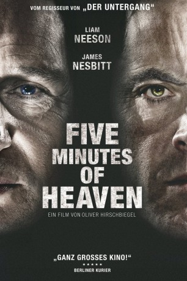

#5735 Five Minutes of Heaven
Auszeichnungen: 1 BAFTA-Awards gewonnen
 
 IMDB-Wertung: 6.7 / 10
IMDB-Wertung: 6.7 / 10  Tomatometer: 75
Tomatometer: 75  Metascore: 0
Metascore: 0 
Nordirland: Alistair hat als junger Mann Jimmy vor den Augen von dessen jüngerem Bruder Joe getötet. Er hat dafür Jahre im Gefängnis verbracht und ist ein völlig anderer Mensch geworden. 25 Jahre später will man ihn in einer Fernsehsendung zu einem Gespräch mit Joe bewegen. Die beiden Männer kämpfen jeder auf seine Art mit den Schatten der Vergangenheit.
Jahr: 2009
Dauer: 89 Minuten
FSK: 12
Land: England Studio: Koch MediaTonspuren:
Untertitel: Deutsch,
Auflösung: 1080p (1920x1040) Größe: 6021 MB
Genre: Thriller, Drama
Regisseur: Oliver Hirschbiegel
Drehbuch: Dick Clement
Soundtrack:
Darsteller:
- Mark Ryder als Young Alistair - 1975
- Diarmuid Noyes als Andy - 1975
- Niamh Cusack als Alistair's Mum - 1975
 Conor MacNeill als Dave - 1975
Conor MacNeill als Dave - 1975- Paul Garrett als Alistair's Dad - 1975
- Gerard Jordan als Jim - 1975
- Carol Moore als Susan - 1975
 James Nesbitt als Joe - 2008
James Nesbitt als Joe - 2008- Barry McEvoy als Joe's Chauffeur - 2008
 Liam Neeson als Alistair - 2008
Liam Neeson als Alistair - 2008- Richard Dormer als Michael - 2008
- Pauline Hutton als Sharon - 2008
 Paul Kennedy als Sound Recordist - 2008
Paul Kennedy als Sound Recordist - 2008 Anamaria Marinca als Vika - 2008
Anamaria Marinca als Vika - 2008 Jonathan Harden als David - 2008
Jonathan Harden als David - 2008- Mickey Mason als Young man on street , uncredited
- Ryan McParland als Passer By , uncredited
- Mathew McElhinney als Stuart - 1975
- Kevin O'Neill als Young Joe - 1975
- Paula McFetridge als Joe's Mum - 1975
- Gerry Doherty als Joe's Dad - 1975
- Luke O'Reilly als Brother Dan - 1975
- Luke McEvoy als Brother John - 1975
- Aoibheann Biddle als Sister 1 - 1975
- Ruth Matthewson als Sister 2 - 1975
- Richard Orr als Alistair's Chauffeur - 2008
- Andrea Irvine als Sarah - 2008
- Katy Gleadhill als Fiona - 2008
- Jill Crawford als Cathy - 2008
 Lalor Roddy als Landlord - 2008
Lalor Roddy als Landlord - 2008- Daniel McClean als Liam - 2008
- Emma Neill als Katie - 2008
- Stella McCusker als Stephanie - 2008
- Amber O'Doherty als Kirsty - 2008
- Louis Rolston als Former UVF Commander - 2008
Datei: X:\2009(A-F)\Five Minutes of Heaven (2009, FSK12, 1920x1040).mkv seit 16.03.2017
Festplatte: HD 2008(G-Z)-2009(A-F)
 Es gibt insgesamt 91 Filme in der Gruppe '2009(A-F)'
Es gibt insgesamt 91 Filme in der Gruppe '2009(A-F)'